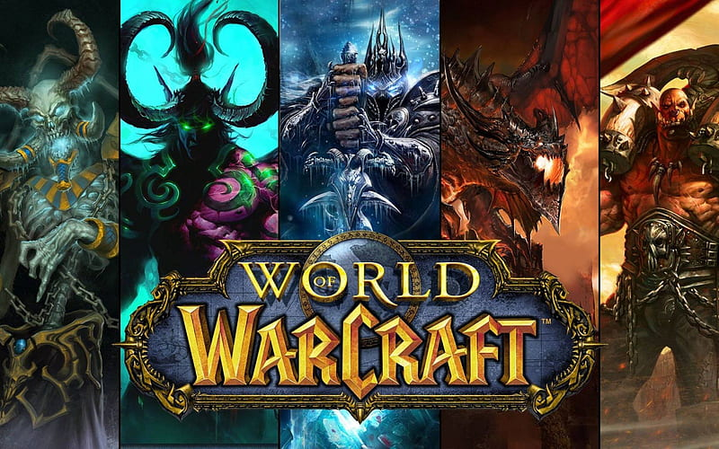
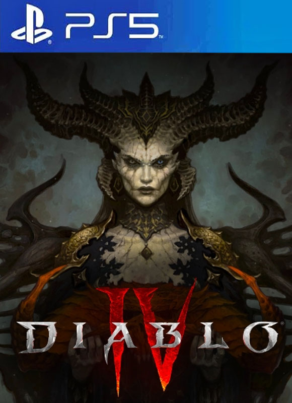
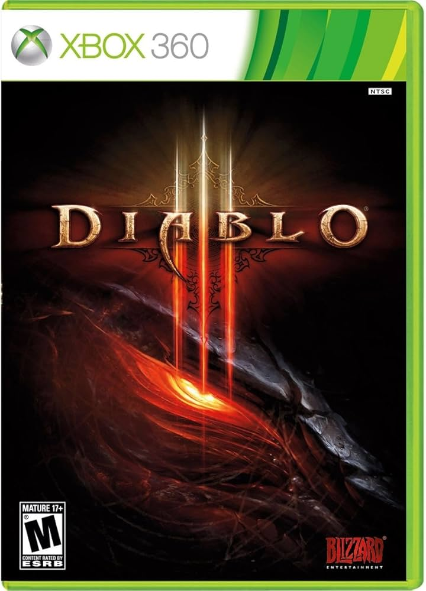
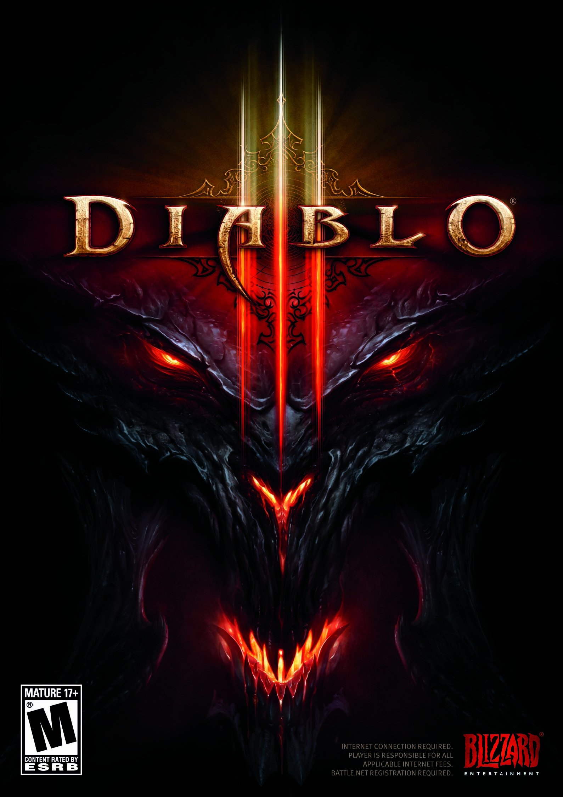

Activision Blizzard es una de las compañías de videojuegos más importantes del mundo, conocida por franquicias como Call of Duty, World of Warcraft y Diablo. Sus juegos se juegan en múltiples consolas y PC.
Call of Duty — En consolas y PC.
CARACTERISTICAS
Multiplataforma: Disponible en PlayStation, Xbox y PC, con modos online competitivos.
Actualizaciones Constantes: Nuevos mapas, armas y temporadas para mantener la experiencia fresca.
Modos Multijugador y Cooperativo: Variedad de experiencias para distintos tipos de jugadores.
eSports: Presencia importante en torneos competitivos a nivel mundial.
World of Warcraft — MMO en PC.
CARACTERISTICAS

MMORPG Legendario: Explora un mundo enorme con millones de jugadores online.
Expansiones Continuas: Nuevas regiones, misiones y clases regularmente añadidas.
Comunidad Global: Eventos y raids coordinados en todo el mundo.
Personalización: Elige entre múltiples razas, clases y estilos de juego.
Diablo — RPG de acción en consolas y PC.
CARACTERISTICAS



Multiplataforma: Disponible en PlayStation, Xbox y PC con modo online y cooperativo.
Acción Intensa: Combates rápidos y exploración de mazmorras llenas de enemigos.
Personalización de Personajes: Varias clases y habilidades para cada estilo de juego.
Actualizaciones: Nuevos contenidos y eventos regulares que mantienen el juego activo.